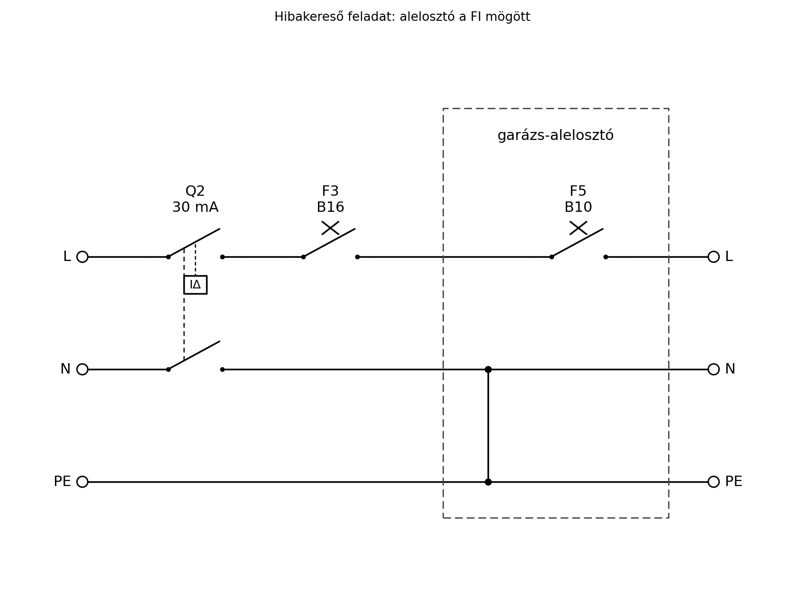

A kapcsolódó elmélet: tankönyv, 21.4 alfejezet.
Biztonsági korlát. A FI-vizsgáló műszeres mérés tanműhelyi környezetre vagy jogosult oktató felügyeletére vonatkozik; hálózati feszültségen önállóan ne végezd. A próbagomb megnyomása nem nyitja meg a burkolatot, ezért nem tartozik ide. Hálózati feszültségű munkát csak jogosult, arra képesített személy végezhet.
Próbagomb ellenőrzése. Az FI-relén mindig találsz egy „T” vagy „Test” feliratú nyomógombot. Ez egy mesterséges differenciaáramot hoz létre, amely a készülék belső áramkörén keresztül folyik, de nem jelent veszélyes hibát. Az ellenőrzés lépései:
A próbagombot havonta egyszer ajánlott ellenőrizni (ez a gyártói és szabványos ajánlás; ellenőrizendő: pontos gyakoriság). Ha a próbagomb nem old le, a FI-relé hibás vagy elakadt, és cserélni kell.
Az alábbi képsor a fenti lépéseket mutatja a készülék előlapján; a képek alatti számok a lépések sorszámai.
A 3. lépésnél azt figyeld, hogy a kar magától, azonnal ugorjon „0” állásba; ha csak a gomb hosszabb nyomására vagy egyáltalán nem old ki, a készüléket cserélni kell. A sikeres próbagomb-teszt csak a mechanika és a kioldórelé működését igazolja, a kioldási áramot és időt nem – azt a műszeres vizsgálat méri. A HTML-kiadásban a képsor lépésenként lejátszható.
Mérés szerinti ellenőrzés. A FI-relé valódi védelmi paramétereit FI-vizsgáló műszerrel (RCD tester) mérjük. Ez a műszer mesterséges differenciaáramot hoz létre az áramkörben, és méri a kioldási időt, valamint a kioldási áramot. A mérés részletes lépéseit a Mérések II.: hurokimpedancia, zárlati áram, FI-vizsgálat (tankönyv, 24.3) alfejezetben tanulod meg. Itt csak a lényeget emeljük ki:
A méréshez a műszer beállításainál meg kell adni a névleges hibaáramot és a típust, majd a mérést a megfelelő tesztárammal végrehajtani.
1. feladat (A). Egy egyfázisú áramkörben az L fázisvezetőn , az N nullavezetőn folyik, az áramok 180°-os fáziseltérésűek. Számítsd ki a differenciaáram értékét! Kiold-e egy 30 mA érzékenységű FI-relé?
2. feladat (A). Sorold fel, milyen típusú FI-relét választanál a következő esetekben: (a) tisztán fűtőbetétes forróvíztároló; (b) inverteres mosógép; (c) frekvenciaváltós szellőzőmotor; (d) elektromosautó-töltő; (e) egy lakóépület főelosztójában, három lakás 30 mA-es FI-je előtt.
3. feladat (B). Egy lakáselosztóban a szivárgóáram mérése során egy adott áramkörön 22 mA differenciaáramot mérsz. Megfelel-e ez a 30 mA-es FI-relé használatának? Hány ilyen áramkör lehet egy FI-relé mögött, ha a FI névleges hibaárama 30 mA, a kioldási tartomány alsó határa , és tanulási szabályként a tartós szivárgóáram nem haladhatja meg a névleges hibaáram 30%-át (9 mA) (ellenőrizendő: MSZ HD 60364-5-53 / gyártói ajánlás)?
4. feladat (B). Rajzold le egy egyfázisú áramkör kapcsolási rajzát: bejövő táplálás, kismegszakító (B16), FI-relé (30 mA, A típus), dugaszoló aljzat. Jelöld a PE vezető elrendezését!
5. feladat (C). Egy ipari kapcsolószekrényben frekvenciaváltó hajt több motort. A meglévő A típusú FI-relék többször tévesen leoldanak. Magyarázd el, mi lehet az ok, és milyen FI-típust javasolnál?
6. feladat (D). Egy hibakeresés során a FI-relé minden éjszaka leold, de nappal nem. A szerelő megméri a szivárgóáramot nappal: 12 mA. Éjszaka azonban 35 mA-re nő. Mi lehet a valószínű ok? Mit javasolsz?
7. feladat (B). Egy 4P FI-relé (Q2) mögött két egyfázisú aljzatkör (F2 az L1-en, F3 az L2-n) és egy háromfázisú bojler (F4, 3P) van. Készítsd el a kapocsbekötés listáját (honnan – hová) a Q1 főkapcsolótól a fogyasztók kapcsáig!
A 8–11. feladat szivárgásértékei szemléltető adatok, nem gyártói adatok.
8. feladat (B). Egy 30 mA-es FI mögött: hűtő 0,8 mA, számítógép monitorral 1,2 mA, mosógép 1,5 mA, LED-világítás összesen 0,6 mA, router és televízió 0,9 mA. Mekkora az összes alapszivárgás? Teljesül-e a 9 mA-es tanulási határ?
9. feladat (B). A 8. feladat köreire még rákerül egy hőszivattyú beltéri egysége (3,5 mA) és egy indukciós főzőlap (3,0 mA). Megfelel-e így egy FI? Ha nem, javasolj csoportosítást!
10. feladat (C). Egy 4P FI névleges árama 40 A. Mögötte három B16, két B10 és egy háromfázisú C16 kismegszakító van; előtte a lakás 3 × 32 A-es főkismegszakítója. Megfelel-e a FI névleges árama? Indokold!
11. feladat (C). Tervezz FI-csoportosítást egy háromszobás lakásra: 4 aljzatkör, 2 világítási kör, 1 fürdőszobai kör, 2 konyhai kör, 1 inverteres mosógép (egyfázisú), 1 háromfázisú inverteres hőszivattyú. Hány védőkészülék kell, milyen típusú, mely körökkel?
12. feladat (D). Keresd meg a hibát a rajzon! Mit tapasztalnál, és hogyan javítanád?

1. feladat megoldása. A differenciaáram a vektori összeg abszolút értéke. Mivel ellentétes fázisúak, a különbség: . Ez jóval meghaladja a 30 mA-t, tehát a FI-relé kiold.
2. feladat megoldása. (a) AC típus is elegendő, de ma már A típus ajánlott, mert később elektronikus eszközök is csatlakozhatnak. (b) F típus (vagy a gyártó által kifejezetten engedett A típus): inverteres, egyfázisú motorvezérlésnél a nagyfrekvenciás hibaáram-összetevők miatt az F típus a biztos választás (ellenőrizendő: a készülék telepítési útmutatója). (c) Háromfázisú frekvenciaváltónál B típus (egyenáramú összetevő is lehet a hibaáramban), egyfázisúnál F típus. (d) B típus, vagy A típus a töltőbe épített 6 mA-es egyenáram-érzékeléssel, 30 mA, töltőpontonként külön (ellenőrizendő: gyártó, MSZ HD 60364-7-722). (e) S-típusú, 100 vagy 300 mA-es FI, hogy a lakás FI-je előbb oldjon; a típusa a mögötte előforduló hibaáramok alapján (ellenőrizendő; lásd Szelektivitás, hátvédelem és megszakítóképesség (tankönyv, 18.4)).
3. feladat megoldása. , tehát a kör szivárgása már a FI lehetséges kioldási tartományában van (15–30 mA), a működés tartósan nem megbízható; a 9 mA-es tanulási határhoz képest is 22 mA > 9 mA, tehát 0 ilyen áramkör üzemeltethető megbízhatóan a 30 mA-es FI mögött. Meg kell keresni és csökkenteni a szivárgást (szigetelésmérés, hibás készülék), vagy a kört több, külön FI-vel (RCBO-val) védett körre bontani.
4. feladat megoldása. A kapcsolási rajz szöveges leírása: A bejövő L1 az egypólusú kismegszakító (B16) bemenetére csatlakozik, az N közvetlenül a FI-relé N-bemenetére fut. A kismegszakító kimenete a FI-relé L-bemenetére megy. A FI-relé kimenete a dugaszoló aljzat fázis és nulla érintkezőjére. A PE-vezető a PE-sínről indul, és nem megy át a FI-relén; közvetlenül a dugaszoló aljzat védőérintkezőjére csatlakozik. A FI-relé nulla kimenete és a PE sínje között nincs összekötés. A megoldás rajza megegyezik a fenti, „Egyfázisú dugaszolóaljzat-kör…” kapcsolási rajzzal.
5. feladat megoldása. A frekvenciaváltó nagyfrekvenciás jeleket és lüktető egyenáramú összetevőt generál a szivárgóáramban. Az A típusú FI-relé a nagyfrekvenciás kapacitív szivárgásra tévesen kioldhat, a sima egyenáramú hibaáramot pedig nem érzékeli. Háromfázisú frekvenciaváltónál a megoldás B típusú FI-relé (a hajtás gyártói előírása szerint; ellenőrizendő: MSZ EN 62423); az F típus csak egyfázisú hajtásnál elég, és az egyenáramú hibaáramot nem érzékeli.
6. feladat megoldása. Valószínű ok: olyan fogyasztó vagy áramkörrész, amely csak éjjel kap feszültséget vagy éjjel nedvesedik: a vezérelt (éjszakai) tarifán bekapcsoló bojler vagy hőtároló fűtőbetétjének romló szigetelése, illetve kültéri kötődoboz vagy kerti lámpa páralecsapódása. (A felharmonikus áram önmagában nem okoz differenciaáramot, mert a fázis- és a nullavezetőn egyaránt folyik.) A 12 mA-ről 35 mA-re növekedő szivárgóáram a 30 mA-es FI-relé kioldását okozza. Lépések: az éjjel üzemelő körök azonosítása (vezérelt kör, időkapcsoló); szigetelésmérés feszültségmentesítés után (az öt biztonsági lépés szerint); körönkénti szivárgóáram-mérés lakatfogóval; a hibás fűtőbetét vagy doboz javítása. A 35 mA-es szivárgás 30 mA-es FI mögött hibát jelez, nem a FI cseréjét kívánja.
7. feladat megoldása. Bekötési lista (honnan – hová):
| Honnan | Hová | Vezető |
|---|---|---|
| Q1 L1, L2, L3 kimenet | Q2 1, 3, 5 (bemenet) | fázisok |
| Q1 N kimenet | Q2 N (bemenet) | N |
| Q2 2 (L1 ki) | F2 bemenet | L1 |
| Q2 4 (L2 ki) | F3 bemenet | L2 |
| Q2 2, 4, 6 (fésűs sín) | F4 1, 3, 5 bemenet | L1, L2, L3 |
| Q2 N (kimenet) | N-sín (a Q2 utáni) | N |
| F2 kimenet / N-sín / PE-sín | 1. aljzatkör L / N / PE | L1, N, PE |
| F3 kimenet / N-sín / PE-sín | 2. aljzatkör L / N / PE | L2, N, PE |
| F4 2, 4, 6 / PE-sín | bojler L1, L2, L3 / PE | fázisok, PE (N csak akkor, ha a bojler adattáblája kéri) |
Ellenőrzés: a két egyfázisú kör N-je a Q2 utáni N-sínről jön, a PE egyik kör esetén sem megy át a FI-n; a próbagomb működését a három fázis bekötése biztosítja (a 3–4 és 5–6 pólus is feszültség alatt van).
8. feladat megoldása. : megfelel, a tartalék 4,0 mA.
9. feladat megoldása. : egy FI mögött nem megfelelő, két csoportra kell bontani. Például: a hőszivattyú és a főzőlap külön FI mögé (), a többi marad (); mindkettő 9 mA alatt van.
10. feladat megoldása. Megfelel, ha a gyártói adatlap a 3 × 32 A-es elővédelmet a 40 A-es FI-hez engedi: a 32 A-es főkismegszakító fázisonként korlátozza a tartós terhelést, így az nem haladhatja meg a 40 A-t. A mögötte lévő kismegszakítók névleges áramainak összege nem mérvadó, mert a körök nem terhelhetnek többet, mint amennyit az elővédelem átenged. A zárlati együttműködést is ellenőrizni kell (ellenőrizendő: gyártói koordinációs táblázat).
11. feladat megoldása (mintamegoldás).
| Készülék | Típus, | Körök |
|---|---|---|
| FI 1 (4P) | A, 30 mA | 4 aljzatkör, fázisokra elosztva |
| FI 2 (2P) | A, 30 mA | fürdőszoba és 2 konyhai kör |
| 2 db RCBO (1P+N) | A, 30 mA | a 2 világítási kör külön-külön |
| 1 db RCBO | F, 30 mA | mosógép |
| FI 3 (4P) | B, 30 mA (ellenőrizendő: gyártói előírás) | hőszivattyú, külön ágon |
Összesen hat készülék. Indoklás: a világítás és az aljzatkörök nem ugyanazon a FI-n vannak, így egyetlen kioldás nem okoz teljes sötétséget; a B típusú FI nem kerülhet A típusú mögé, mert a simított egyenáramú hibaáram az A típusú FI-t „vakká” teheti; a csoportok szivárgását átadáskor lakatfogóval ellenőrizni kell. Más, indokolt kiosztás is elfogadható.
12. feladat megoldása. A garázs-alelosztóban az N- és a PE-sín össze van kötve a Q2 FI mögött. A fogyasztók N-árama megoszlik az N-en (a FI-n át) és a PE-n (a FI-t megkerülve), ezért a FI kiold, illetve hibánál kiszámíthatatlanul érzékel. Javítás az öt biztonsági szabály után: az áthidalás eltávolítása, N–PE szigetelésmérés leválasztott N-nel (> 1 MΩ, ellenőrizendő), majd a FI műszeres vizsgálata.